16-825 · Learning for 3D Vision
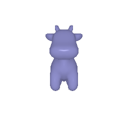
part1_1.py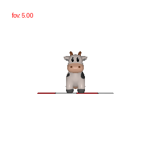
3 / tan(fov/2) to keep the cow at a constant size in the frame.
Code: starter/dolly_zoom.py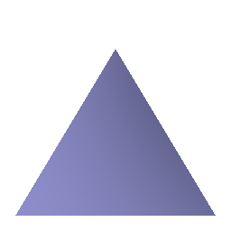
The tetrahedron contains 4 vertices and 4 triangular faces. Each
face corresponds to one of the C(4,3) = 4 possible combinations of 3 vertices.
Code: part2.py
[−1, 1]³, rendered from 36 azimuth angles
at an elevation of 20°.The cube contains 8 vertices and 12 triangular faces. The
vertices are located at the 8 corners (±1, ±1, ±1). Each of the
6 square sides is divided into 2 triangles.
Code: part2.py
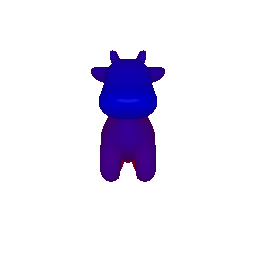
I selected color1 = [0, 0, 1] (blue at z_min) and
color2 = [1, 0, 0] (red at z_max).
Since blue and red don't share an RGB channel, interpolation gives each alpha value a unique color, smoothly transitioning through magenta. This gradient really helps us see depth. Colors that share a channel, like green and yellow, would blend together less clearly.
Code: part3.py
The baseline is R_0 = I and T_0 = (0, 0, 3). Since these
are world-to-camera extrinsics, R_relative rotates the camera frame, and a positive
T_relative shifts the scene in camera coordinates.
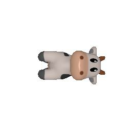
R_relative = [[0,1,0],[−1,0,0],[0,0,1]], T_relative = 0.
This rotates the image 90° about the camera's optical axis without changing the viewpoint, so
the cow appears to lie on its side.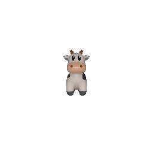
R_relative = I, T_relative = [0, 0, 2].
This moves the cow 2 units along +z, equivalent to moving the camera back. The cow
therefore appears smaller.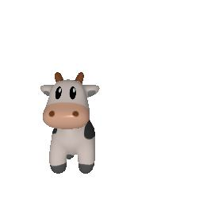
R_relative = I, T_relative = [0.5, −0.5, 0].
This shifts the cow parallel to the image plane without changing its depth, size, or
orientation.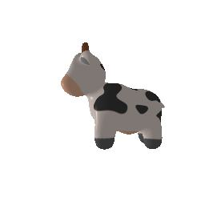
R_relative = [[0,0,1],[0,1,0],[−1,0,0]],
T_relative = [−3, 0, 3].
A 90° rotation about the up axis directs the camera along the world −x
axis. Because this rotation moves T_0 to (3,0,0), the translation
re-centers the cow and produces a side view.Code: part4.py
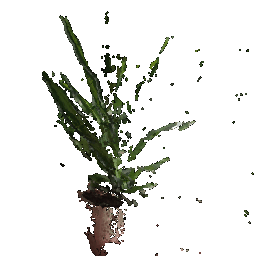
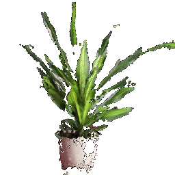
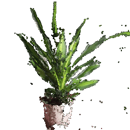
Both clouds are unprojected directly into world coordinates, so they can be combined with
torch.cat without registration.
Two implementation details require special handling. First, the stored cameras follow a
y-down convention, as indicated by R[1,1] ≈ −1 in the saved
extrinsics. The turntable therefore uses up=((0, -1, 0),) to keep the plant
upright. Second, pixels without valid depth values unproject to NaN, which prevents
the renderer from computing a valid bounding box. These non-finite points are removed before
rendering.
Code: part5.py, --render plant_rgbd
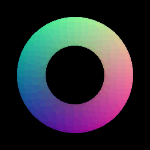
R = 1.0, r = 0.3, 400×400 samples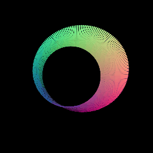
The torus is parameterized as x = (R + r·cosθ)cosφ,
y = (R + r·cosθ)sinφ, and z = r·sinθ, sampled
over (φ, θ) ∈ [0, 2π]².
The second object is a Möbius strip, parameterized as
x = (1 + v·cos(u/2))cos u,
y = (1 + v·cos(u/2))sin u, and z = v·sin(u/2). The
u/2 term introduces a half-twist, creating a single-sided surface with a topology
distinct from that of the torus.
Code: part5.py
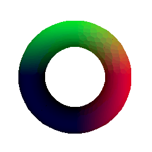
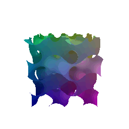
The torus is defined as the zero level set of
F = (sqrt(x² + y²) − R)² + z² − r².
The function is evaluated on a 64³ grid, and the surface is extracted using
mcubes.marching_cubes. Because the resulting vertices are expressed in voxel-index
space, they must be rescaled to world coordinates.
The second object is a gyroid defined by
sin x·cos y + sin y·cos z + sin z·cos x = 0. It is a
triply periodic minimal surface without a simple parametric form, making an implicit
representation well suited to this geometry.
Code: part5.py
Rendering quality. Mesh faces create a seamless surface, which means you get smooth shading and accurate occlusion. Point clouds, on the other hand, reveal gaps when you get close, and points from the background can peek through at slight angles. The quality of the mesh still hinges on how many voxels are used: at 64³, the torus looks a bit faceted.
Rendering speed. At comparable quality, the mesh is faster here: roughly 10k triangles versus 160,000 points for a solid-looking torus. Point clouds are easy to subsample, while meshes require decimation.
Memory. Point clouds use less memory per primitive because they store only position and color, without connectivity. However, the implicit-surface pipeline requires a dense intermediate grid. The 96³ gyroid grid contains approximately 885,000 values before marching cubes begins, and this cost grows cubically with resolution.
Ease of use. Point Cloud is easiest to acquire and process initially, as raw sensor data can be used directly without managing complex surfaces or topology. Mesh takes more effort to build up front, but is much easier to use in downstream applications like rendering, 3D editing, and physics simulations thanks to its defined surfaces and structural normals.
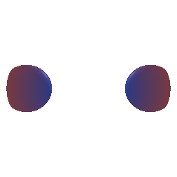
Two metaballs orbit toward each other and then apart again. The surface is the zero level-set of a time-varying implicit function,
F(x, t) = Σᵢ r² / ||x − cᵢ(t)||² − 1which I re-evaluate on the voxel grid and re-mesh at every frame. What makes this interesting is that the surface changes topology partway through. When the balls are far apart it has two connected components, and once they get close enough those merge into a single one. A mesh with fixed connectivity cannot represent this, and neither can a parametric function, since both have their topology fixed from the start. An implicit function gives it to you for free, which is exactly the advantage I described in 5.3.
The merge threshold is also predictable. At the midpoint between the two centers the field
reduces to 2r²/s² − 1, so the lobes first touch when
s = r√2. With r = 0.78 that works out to 1.1031. To
confirm this, I counted the connected components of the extracted mesh across the animation:
every sampled frame below that separation produced one component and every frame above it
produced two, with no mismatches.
The balls also counter-rotate in the xy-plane, and the separation follows a cosine, so the loop joins up seamlessly and the merge stays visible from more than one viewing angle.
Code: part6.py
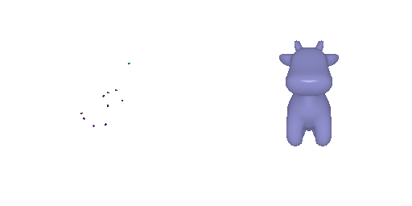
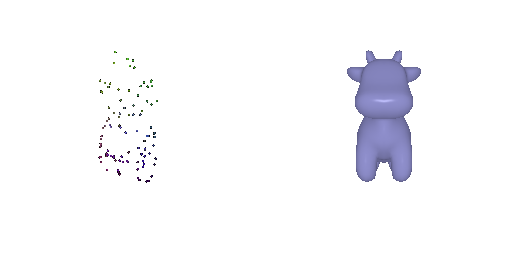
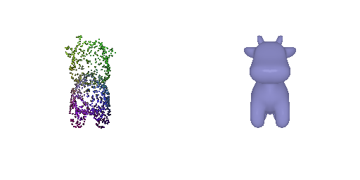
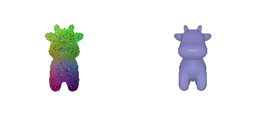